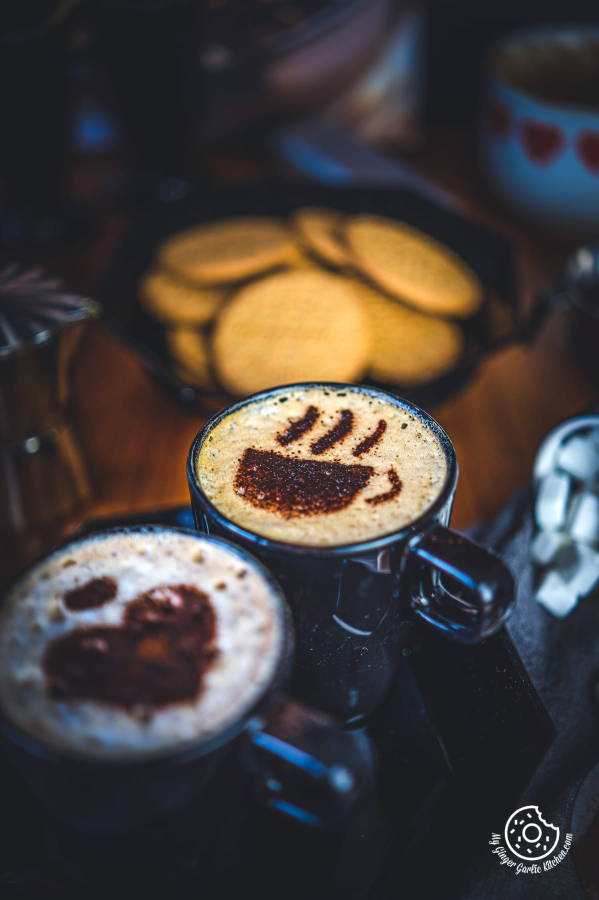

Skip image
Coffee

"This is, excuse me, a damn fine cup of coffee." - Agent Dale Cooper
Savor the essence of Twin Peaks with the irresistible Twin Peaks Coffee. This recipe captures the spirit of the iconic TV series, delivering a cup of coffee that's truly damn fine. Made with freshly brewed, high-quality coffee beans, it awakens the senses with its bold flavor and rich aroma. Each sip transports you to the enigmatic town, evoking a sense of comfort and intrigue. Whether you're an Agent Cooper fan or simply appreciate a great cup of joe, Twin Peaks Coffee is a must-try for anyone seeking a taste of the extraordinary.
Ingredients:
- Water: Fresh, clean water is essential for brewing a great cup of coffee.
- Coffee beans: Choose high-quality coffee beans that suit your taste preferences. Opt for whole beans for maximum freshness and flavor.
- Milk or cream (optional): If desired, you can add milk or cream to your coffee for a creamier taste and texture.
- Sugar or sweetener (optional): If you prefer your coffee sweet, you can add sugar, honey, or your preferred sweetener.
- Flavorings (optional): You can enhance the flavor of your coffee by adding spices like cinnamon, nutmeg, or vanilla extract.
Steps:
- Boil water: Start by boiling fresh, clean water. Use filtered water for the best taste.
- Measure coffee: Determine the desired coffee-to-water ratio based on your preference. A general guideline is about 1 to 2 tablespoons of coffee grounds for every 6 ounces of water.
- Grind coffee beans: If using whole coffee beans, grind them just before brewing to preserve freshness. Use a burr grinder and adjust the grind size according to your brewing method.
- Prepare coffee filter: If using a drip coffee maker, place a coffee filter in the designated basket. For other methods like a French press or pour-over, skip this step.
- Add coffee grounds: Add the measured coffee grounds to the filter or directly to your brewing device.
- Pour water: Once the water reaches the desired temperature (around 195-205°F or 90-96°C), pour it slowly and evenly over the coffee grounds. Start with a small amount to allow the coffee to bloom, then continue pouring the remaining water.
- Steep or brew: Let the coffee steep or brew according to the specific method you are using. Different brewing methods have different recommended brewing times.
- Stir (if applicable): If using a French press or similar method, gently stir the coffee and water mixture after steeping for a more even extraction.
- Press or filter (if applicable): For methods like the French press, press the plunger slowly to separate the coffee grounds from the liquid. If using a pour-over or drip coffee maker, allow the water to pass through the filter and collect the brewed coffee.
- Serve and enjoy: Pour the brewed coffee into your favorite mug or cup. You may choose to add milk, cream, sugar, or other desired flavorings to enhance the taste. Enjoy your delicious cup of coffee!
Return to Main Page
Go to top